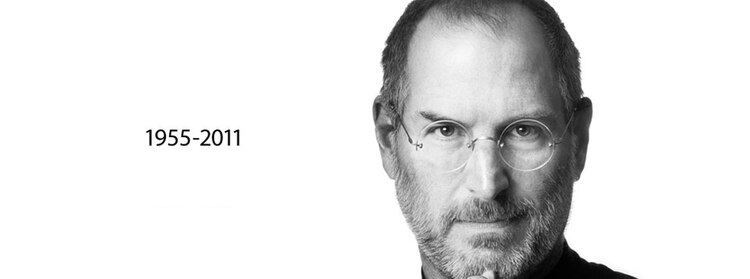

“Si hoy fuese el último día de mi vida, ¿querría hacer lo que voy a hacer hoy? Y si la respuesta era no durante demasiados días seguidos, sabía que necesitaba cambiar algo”.Steve Jobs
Steve Jobs

"Solo quería hacerte saber que Steve odia a los fotógrafos", Albert Watson el hombre detras de la iconica fotografia de Steve Jobs.
Linea de tiempo sobre la vida de Steve Jobs
- 1955: El 24 de Febrero nace Steve Jobs en San Francisco-Estados Unidos.
- 1971-1: Ingreso en el Reed college(Universidad de arte Porland-Oregon), estudio durante un semestre luego de esto se retiro para viajar a la India en busqueda de iluminacion espiritual, regreso a Estados Unidos donde realizo una practica en Hewlett-Packard, para luego ser contratado como diseñador por Atari.
- 1971-2: Ingresa al club de computadoras Homebrew en Silicon Valley, este era un de los primeros y mas influyentes clubes de computadora del mundo. Allí el y su socio tuvieron la inspiracion para crear el Apple1.
- 1976-1: Steve y su socio construyen su primer ordenador personal, el Apple 1, el cual contaba con una interez de video integrada y una memoria ROM, ademas de poder cargar programas desde memorias externas.
- 1976-2: Se funda Apple Computer Company con Wozniak y Ronal Wayne.
- 1977: Se crea el Apple2 el cual se convirtio en el primer ordenador de consumo masivo. Este mismo año Apple paso a ser la empresa con mayor crecimiento en Estados Unidos.
- 1981: Apple que había hecho publicas las especificaciones del Apple2 se ve en una competencia con la empresa IBM que copio un gran numero de sus caracteristicas, lo cual significo una gran competencia para Apple por lo cual Steve Jobs contrata a John Sculley(El presidente de Pepsi) para la direccion de la compañia sin esperar que este acabaria echándole de su propia empresa.
- 1986: Jobs fundó una nueva compañia informatica llamada NeXT Computer la cual compro la productora del cineasta, lucasfilm. Asi nacio una nueva empresa de animacion llamada Estudios de Animacion Pixar
- 1989: Pixar bajo la direccion de Steve Jobs, gana el Oscar al mejor cortometraje animado por Tin Toy.
- 1996: Apple decide comprar NeXT Computer, lo que supuso la vuelta de Steve Jobs a la empresa con un cargo de asesor interino. Nueve meses mas tarde regresa a dirigir la compañia.
- 1998:Steve Jobs volvió a revolucionar el mercado informático con el lanzamiento del iMac, un ordenador compacto integrado en el monitor.
- 2001: Jobs pasó a desplegar su inagotable inventiva en otros ámbitos,con un reproductor de audio de bolsillo, el iPod revolucionando nuevamente el mundo.
- 2004: Sus problemas de salud lo obligaron a apartarse temporalmente de su trabajo en 2004, año en que fue tratado de un cáncer de páncreas.
- 2007: Presentó el iPhone, primero de la familia de teléfonos inteligentes de alta gama producida por Apple. Declarado "invento del año" por la revista Time.
- 2009: Steve Jobs tuvo que someterse a un trasplante de hígado, por tanto delegó la mayor parte de sus responsabilidades en Timothy Cook. Pero ni siquiera el visible deterioro de su salud lograría reducir su entrega al trabajo y su afán innovador.
- 2010: Con su creatividad intacta, todavía en 2010 sorprendió al mundo con el iPad, un híbrido de tableta y teléfono móvil.
- 2011: 5 de octubre de 2011, a los 56 años de edad, falleció en su casa de Palo Alto, víctima del avance del cáncer que le había sido detectado en 2003.